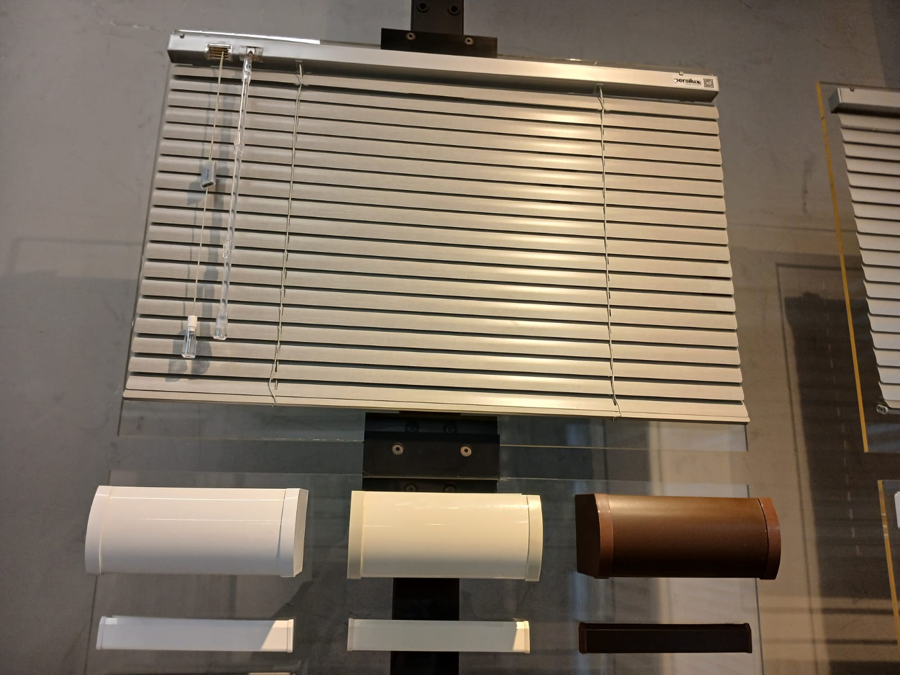
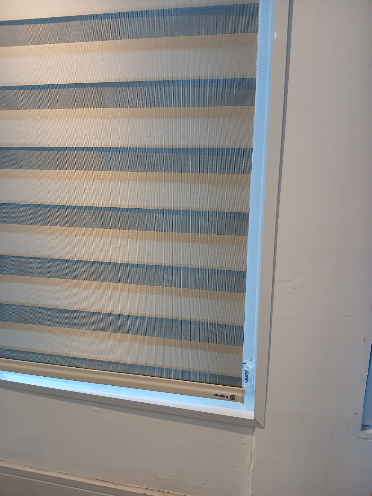

Nossos Produtos

Horizontal 25mm
Prática, versátil e clássica. Oferece um controle preciso da entrada de luminosidade através do basculamento de suas lâminas finas de 25mm.
- Lâminas de 25mm (Alumínio ou PVC)
- Controle milimétrico de luz
- Alta durabilidade e leveza
- Ideal para cozinhas, banheiros e escritórios
.jpeg)
Horizontal 50mm
Visual robusto, elegante e imponente. As lâminas mais largas de 50mm remetem ao design premium, valorizando muito o ambiente.
- Lâminas marcantes de 50mm
- Opções em Madeira, PVC ou Alumínio
- Excelente isolamento visual e sofisticação
- Ideal para salas de estar e grandes vãos

Vertical de Tecido
O caimento impecável do tecido aliado à funcionalidade do giro de 180° das lâminas. Excelente para cobrir grandes larguras e portas-janelas.
- Tecidos translúcidos ou blackout
- Giro completo das lâminas verticais
- Recolhimento prático e suave
- Perfeita para salas, divisórias e sacadas

Persiana Rolo
Modelo moderno e minimalista. Quando recolhida, fica totalmente enrolada de forma discreta na parte superior da janela.
- Tecido: Screen (Tela Solar) e Blackout
- Proteção térmica e controle solar
- Design limpo e contemporâneo
- Fácil limpeza e manutenção

Persiana Romana
Sofisticação e aconchego em evidência. Seu recolhimento em gomos horizontais sequenciais cria uma atmosfera charmosa e elegante.
- Tecidos nobres e texturizados
- Acabamento em dobras estruturadas
- Disponível em versões translúcidas ou blackout
- Ideal para quartos e salas acolhedoras

Toldos
Proteção eficiente contra sol e chuva para áreas externas. Amplie seus ambientes com conforto, resistência e excelente design.
- Modelos retráteis e fixos
- Lonas acrílicas e sintéticas de alta resistência
- Conforto térmico e proteção UV
- Ideal para varandas, fachadas, lojas e jardins